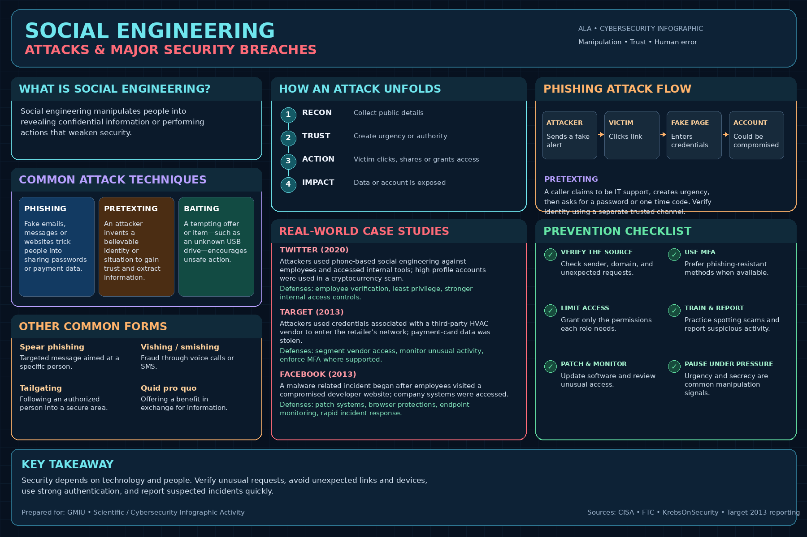

✉
Phishing
Fraudulent emails, texts, or websites imitate trusted sources to steal credentials, financial information, or prompt unsafe clicks.
FAKE MESSAGE OR SITEAttackers don't always break technology. Sometimes they manipulate trust. Explore common tactics, real-world incidents, attack flows, and practical ways to defend people and systems.

Different lures, same objective: persuade someone to disclose information, grant access, or take an unsafe action.
Fraudulent emails, texts, or websites imitate trusted sources to steal credentials, financial information, or prompt unsafe clicks.
FAKE MESSAGE OR SITEAn attacker invents a believable identity or scenario—such as IT support or a vendor—to gain trust and request sensitive information.
FALSE IDENTITYA tempting offer, free download, prize, or unknown USB drive encourages a person to take an unsafe action.
TEMPTING LUREA simplified flow for awareness training. Real incidents may follow different paths.
Collect public details about a person or organization.
Impersonate a trusted source or create urgency.
A person clicks, shares information, or approves access.
Accounts, data, or systems may be exposed.
Report, block access, reset credentials, and investigate.
These cases show the importance of employee verification, vendor controls, and technical defenses.
Attackers used phone-based social engineering against employees to access internal tools and take over high-profile accounts for a cryptocurrency scam.
Verify unusual requests, restrict privileged tools, train staff, and monitor suspicious access.
Attackers used credentials associated with a third-party HVAC vendor to access Target's network before payment-card data was stolen.
Segment vendor access, enforce strong authentication, and monitor third-party connections.
Facebook reported that employees visited a compromised developer website, leading to malware on some employee laptops.
Patch software, strengthen browser and endpoint protections, and respond quickly.
Case summaries are concise educational descriptions. Consult linked sources for full context.
| Technique | Common signal | Possible risk | Helpful defense |
|---|---|---|---|
| Phishing | Unexpected link, attachment, or login request | Credential theft or fraud | Verify sender and domain; use MFA |
| Pretexting | Urgent request from a claimed authority | Disclosure of sensitive information | Verify identity through a separate trusted channel |
| Baiting | Unknown USB, free offer, or unofficial download | Malware or unsafe access | Avoid unknown media; use trusted sources |
Combine people, processes, and technical safeguards to reduce risk.
Confirm unexpected requests through a separate trusted channel.
Enable MFA; prefer phishing-resistant options where available.
Apply least privilege and review vendor permissions.
Learn to spot urgency, impersonation, and suspicious links.
Keep software updated and maintain tested backups.
Notify security staff and investigate promptly.
Try this scenario. The quiz runs locally and does not collect information.
An unexpected caller claiming to be IT asks for your one-time login code. What should you do?
Verify incident details and extend your research using credible sources.